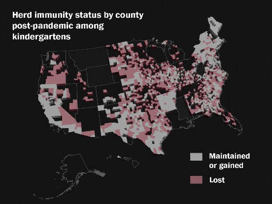
U.S. vaccination rates are plunging. Look up where your school stands.
Read story ↗
How TikTok keeps its users scrolling for hours a day
Read the series ↗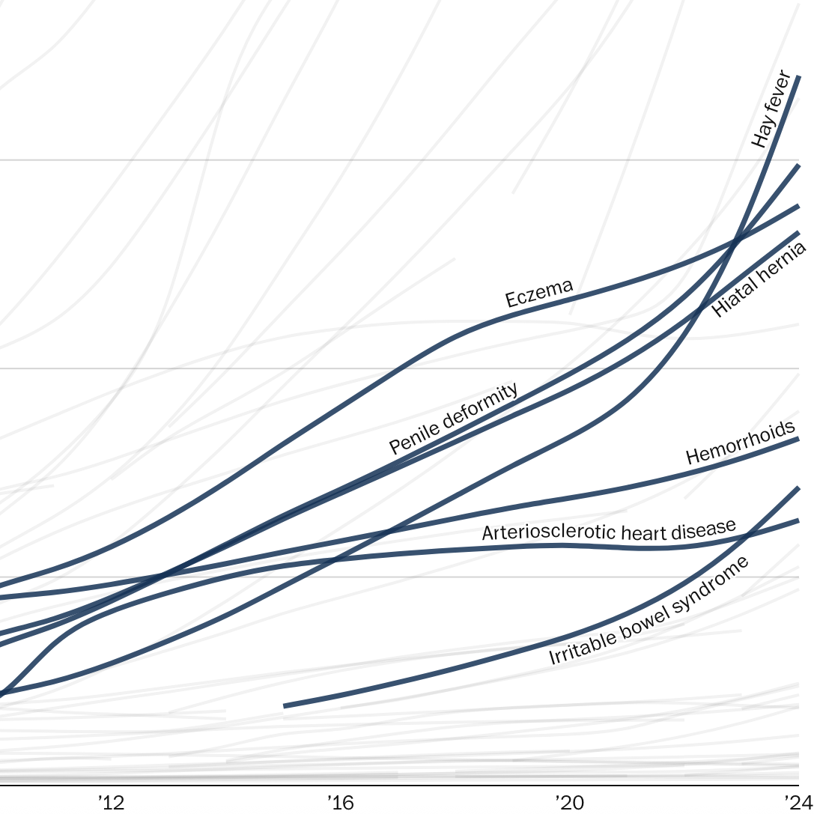
How some veterans exploit $193 billion VA program, due to lax controls
Read the series ↗RFK Jr. disparaged vaccines dozens of times in recent years and made baseless claims on race
Read the story ↗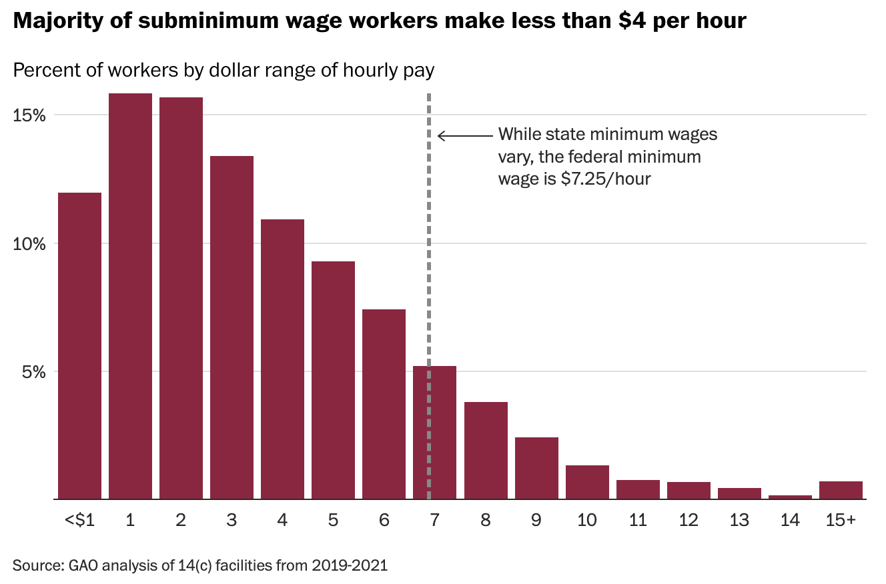
Some disabled workers in the U.S. make pennies per hour. It's legal.
Read the series ↗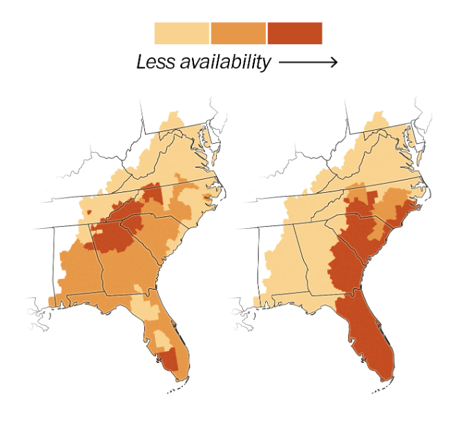
Abortion clinic wait times surge after Florida law
Read story ↗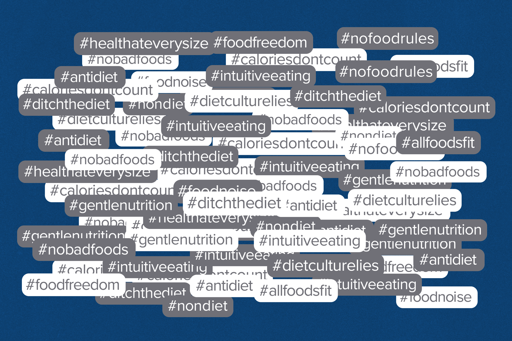
The food industry co-opts the anti-diet movement
Read story ↗The food industry pays 'influencer' dietitians to shape your eating habits
Read story ↗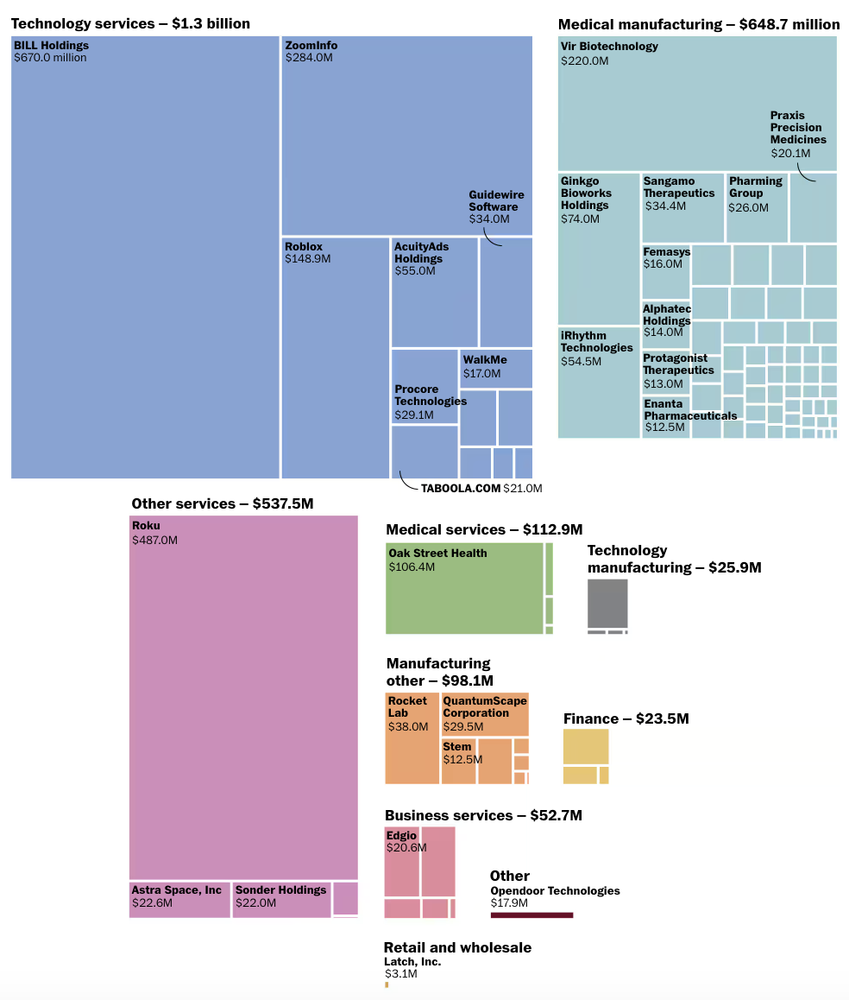
SVB collapse: billions in uninsured assets at risk for companies
Read story ↗How Arizona became ground zero for election deniers
Read story ↗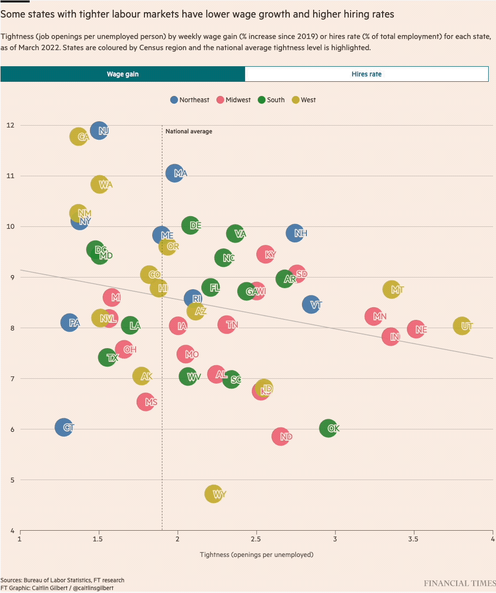
Where are all the workers? US states with the tightest jobs markets
Read story ↗
US flight route data visualization
Read story ↗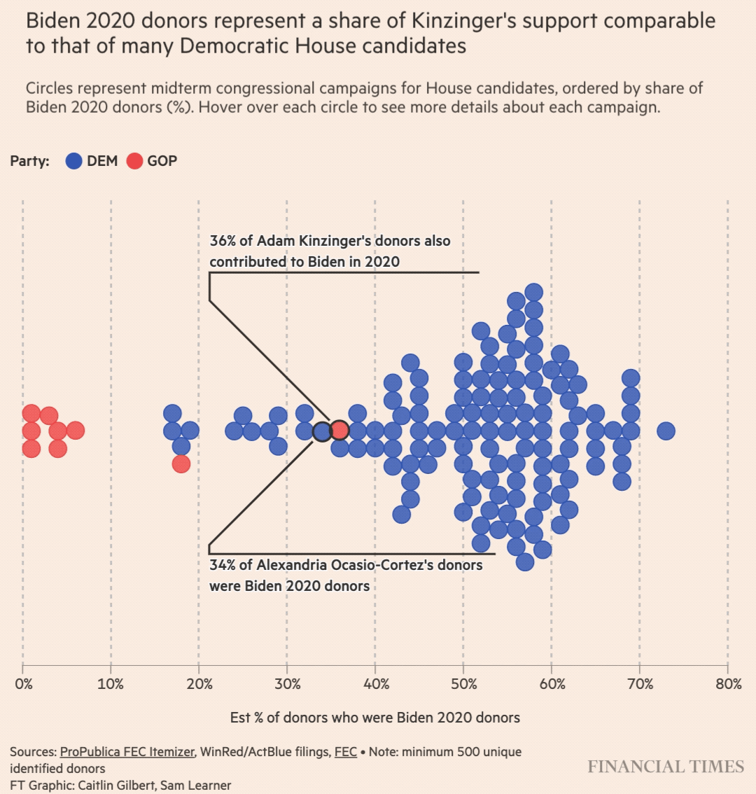
Megadonors tighten grip on Republican fundraising
Read story ↗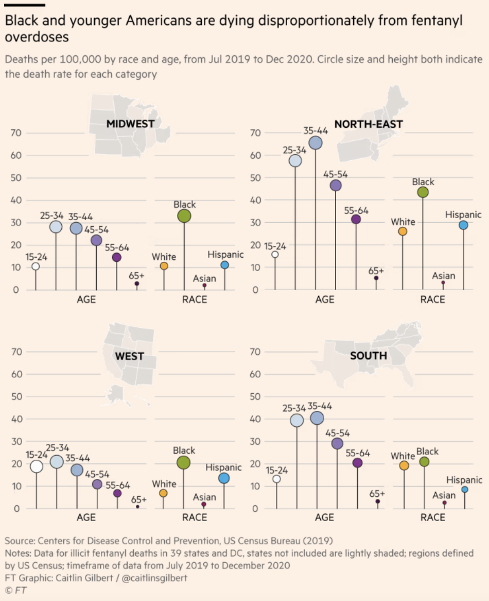
Will overdose deaths force an end to the US 'war on drugs'?
Read story ↗
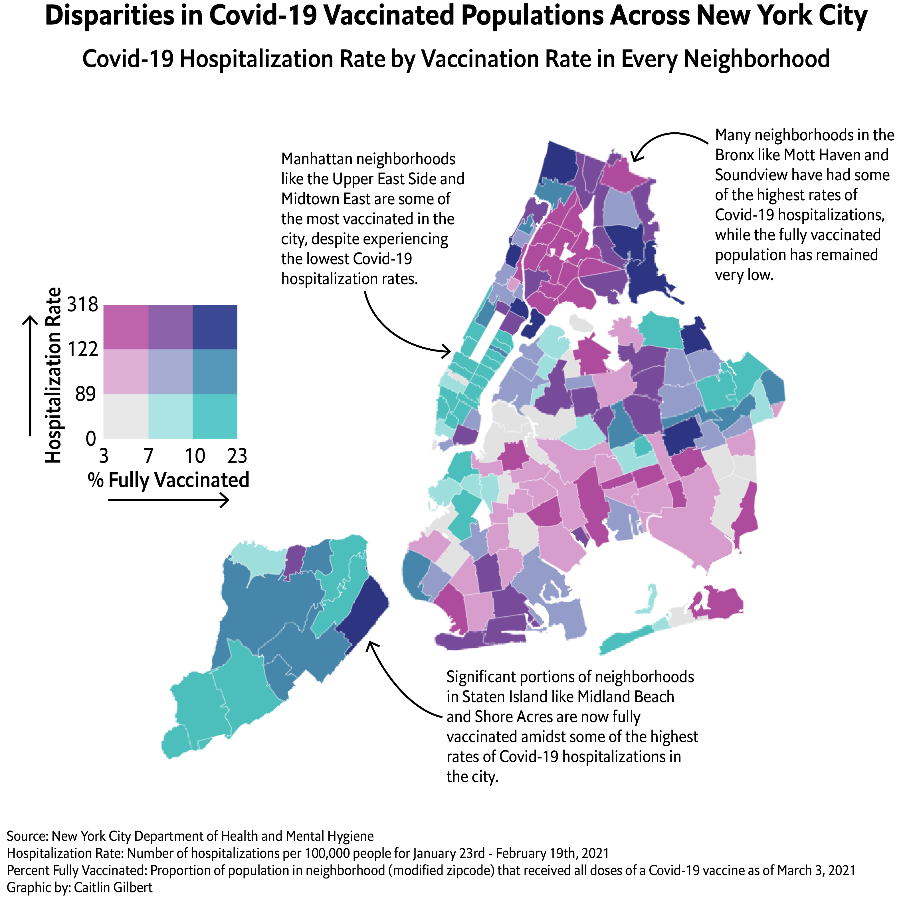
Covid-19 Vaccination and Hospitalization Rates Across NYC
View project ↗
Georgia Runoff Election Turnout Demography
View project ↗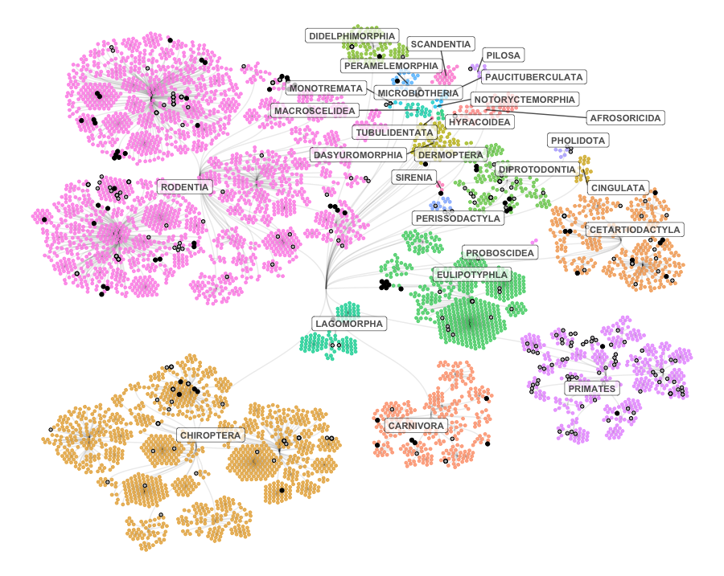
Endangered & Extinct Species Across Mammalian Orders
View project ↗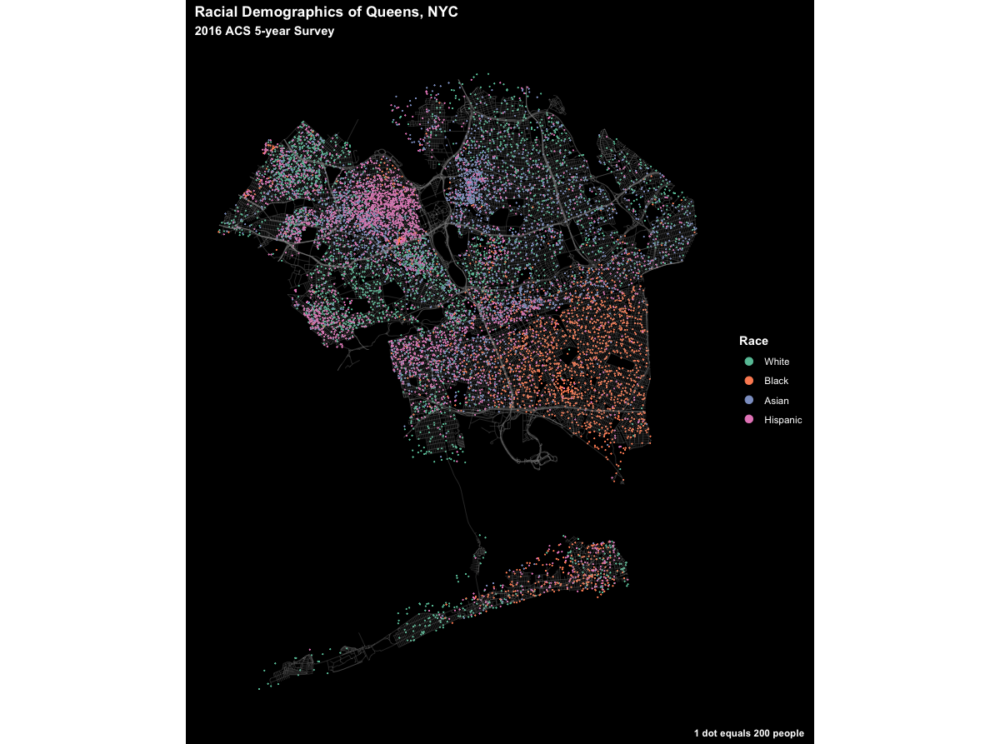
Racial Dot Plot of Queens, NY
View project ↗Selected publications, reporting & talks